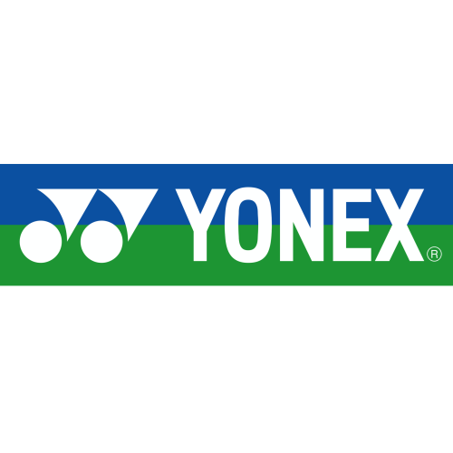
YonexOfficial Brand Network
Brand partner resmi untuk pengadaan olahraga yang rapi, legal, dan siap jalan.
CV Berkah Jaya Abadi Sports membantu sekolah, kampus, klub, komunitas, dan instansi memilih brand yang tepat lalu mengawalnya sampai proses pengadaan selesai.
- 20+ brand partner aktif
- Multi-sport badminton, bola, apparel, dan perlengkapan
- Procurement fit siap untuk kebutuhan sekolah dan instansi
Official procurement-ready network
20+ active partners
Brand olahraga yang kami kurasi untuk suplai institusi.
Fokus pada original product, ketersediaan yang lebih stabil, dan pilihan brand yang relevan untuk sekolah, kampus, klub, dan instansi.
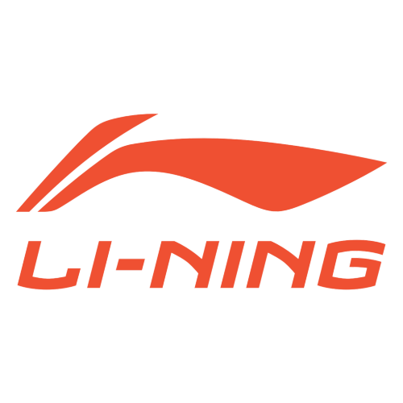
Li-Ning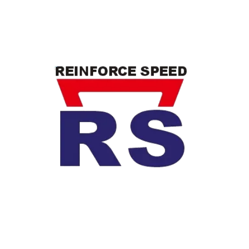
RS Eagle
Eagle
Original product
Institutional supply
Multi-sport support
Kurasi brand
Kami tidak sekadar jual produk. Kami kurasi brand yang benar-benar relevan untuk kebutuhan lapangan.
Setiap rekomendasi brand kami lihat dari jenis cabang olahraga, intensitas pemakaian, standar kualitas, legalitas produk, dan kemudahan pengadaannya. Hasilnya bukan sekadar daftar katalog, tetapi opsi yang lebih aman untuk dipakai jangka panjang.
Legal dan mudah dipertanggungjawabkan
Kami mengutamakan brand dengan produk original, jelas asalnya, dan lebih siap masuk ke alur pengadaan formal.
Dipakai untuk kebutuhan nyata
Brand yang kami bawa adalah brand yang relevan untuk latihan, kompetisi, sampai kebutuhan harian sekolah dan instansi.
Siap untuk suplai berkelanjutan
Kami menjaga portofolio brand agar tidak berhenti di satu transaksi saja, tetapi bisa mendukung kebutuhan berikutnya dengan ritme yang lebih stabil.
Partner unggulan
Brand yang paling sering masuk ke kebutuhan kompetisi, pembinaan, dan pengadaan institusi.
Enam brand ini kami tampilkan sebagai wajah utama portofolio karena paling sering diminta untuk kualitas, performa, dan ketersediaannya.
Yonex
Untuk kebutuhan raket, shuttlecock, dan perlengkapan badminton yang paling familiar di pasar.
Li-Ning
Sering dipilih untuk kombinasi performa, tampilan, dan varian produk yang luas.

100Plus
Pilihan populer untuk dukungan aktivitas olahraga, event, dan kebutuhan recovery lapangan.
RS
Sering dipilih untuk kebutuhan pertandingan dan pembinaan yang butuh rasa main stabil.
Eagle
Masuk ke kebutuhan yang menuntut fleksibilitas, ketersediaan, dan durabilitas lapangan.
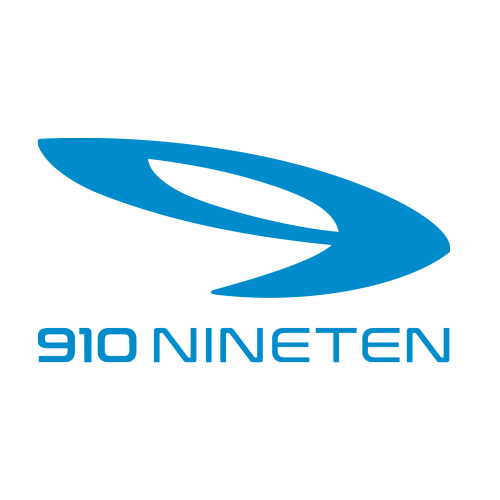
Specs
Kuat untuk kebutuhan sepatu, apparel, dan perlengkapan multisport yang mudah ditemukan di lapangan.
Portofolio brand
Seluruh jaringan partner yang kami tangani.
Gunakan filter sederhana ini untuk fokus ke brand utama atau melihat jaringan partner yang lebih luas.
Brand utama
Yonex
Brand utama
Li-Ning
Brand utama
100Plus
Brand utama
RS
Brand utama
Eagle
Brand utama
Specs
Jaringan

Partner network
Jaringan
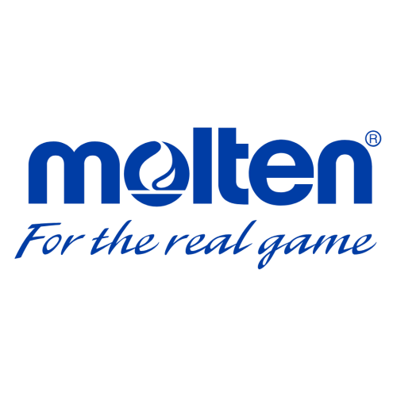
Partner network
Jaringan

Partner network
Jaringan
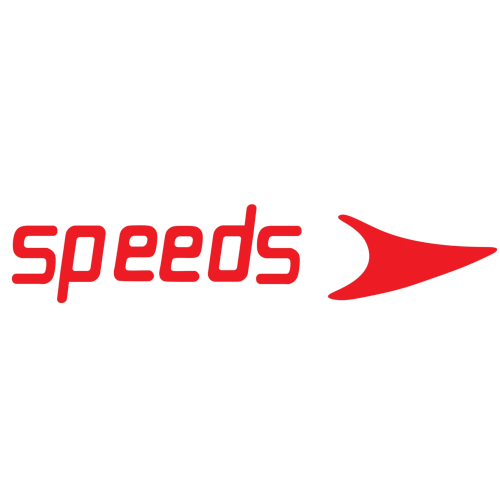
Partner network
Jaringan
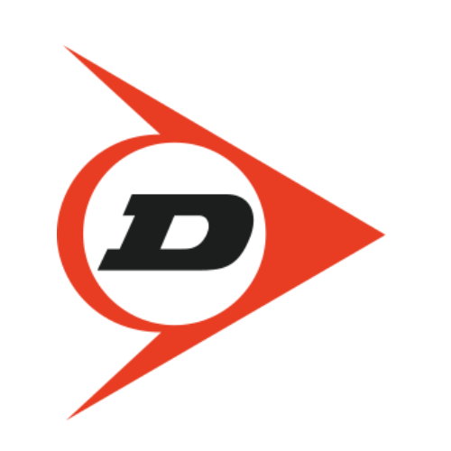
Partner network
Jaringan

Partner network
Jaringan
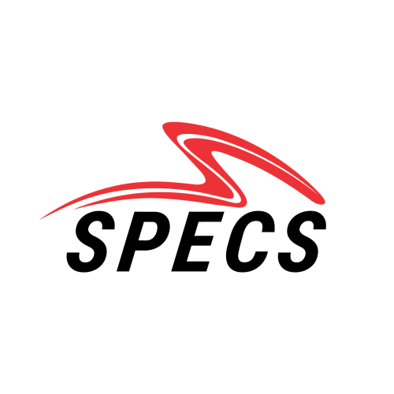
Partner network
Jaringan
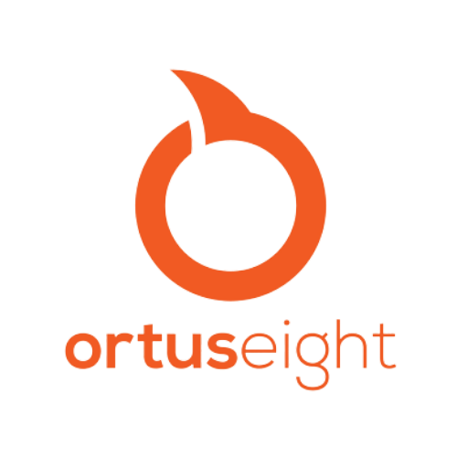
Partner network
Jaringan
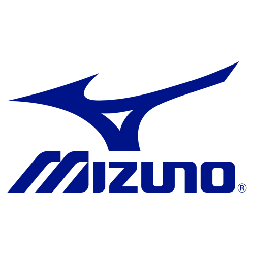
Partner network
Jaringan

Partner network
Jaringan
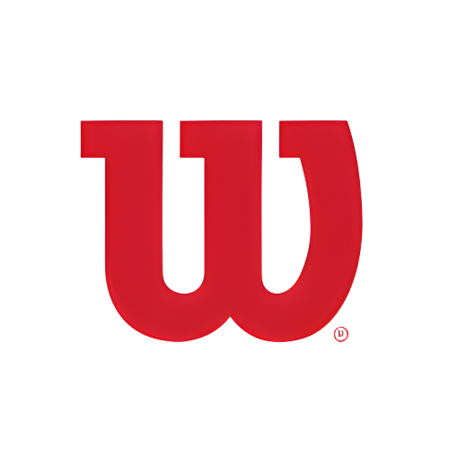
Partner network
Jaringan

Partner network
Jaringan

Partner network
Jaringan

Partner network
Cara kerja
Dari kebutuhan awal sampai brand siap diajukan.
Kami susun alur yang memudahkan tim pengadaan melihat opsi, membandingkan brand, dan bergerak lebih cepat tanpa kehilangan konteks teknis.
Petakan cabang dan volume kebutuhan
Kami mulai dari jenis olahraga, jumlah item, intensitas pemakaian, dan target kualitas supaya pilihan brand tidak meleset dari kebutuhan lapangan.
Kurasi brand dan alternatif yang paling masuk akal
Setelah itu kami susun opsi utama beserta alternatifnya agar tim Anda punya ruang membandingkan kualitas, positioning, dan ketersediaan.
Dampingi proses sampai pengadaan lebih siap dieksekusi
Fokus kami bukan hanya memberi daftar brand, tetapi membuat keputusan brand lebih mudah diterjemahkan ke langkah pengadaan berikutnya.
Butuh brand tertentu?
Kami bisa bantu cari brand, susun alternatif, dan siapkan alur pengadaannya.
Jika brand yang Anda cari belum muncul di halaman ini, tim kami tetap bisa bantu telusuri opsi yang sesuai dengan kebutuhan proyek, anggaran, dan kategori olahraga Anda.
Hubungi Tim Kami